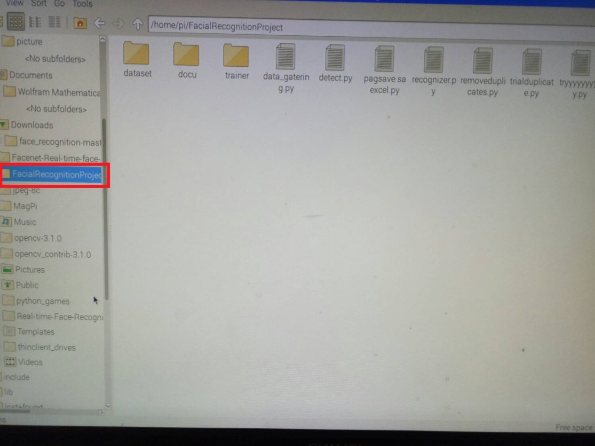
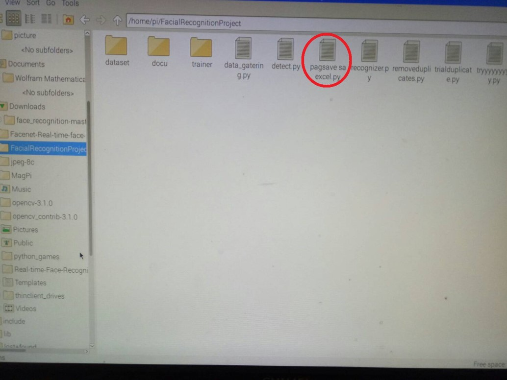
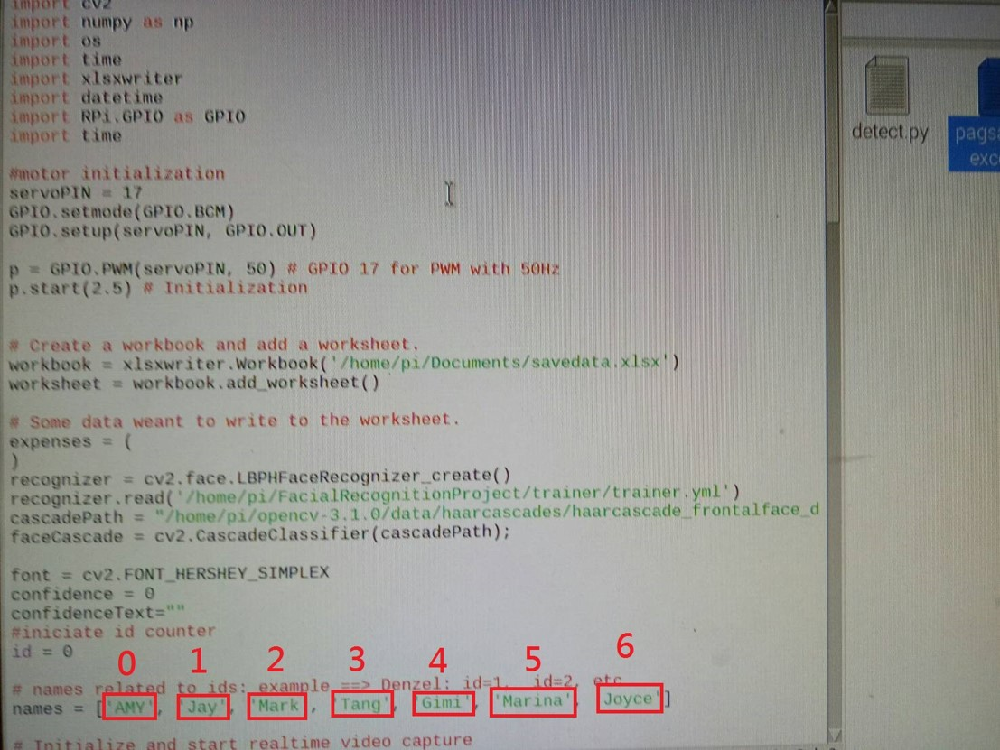
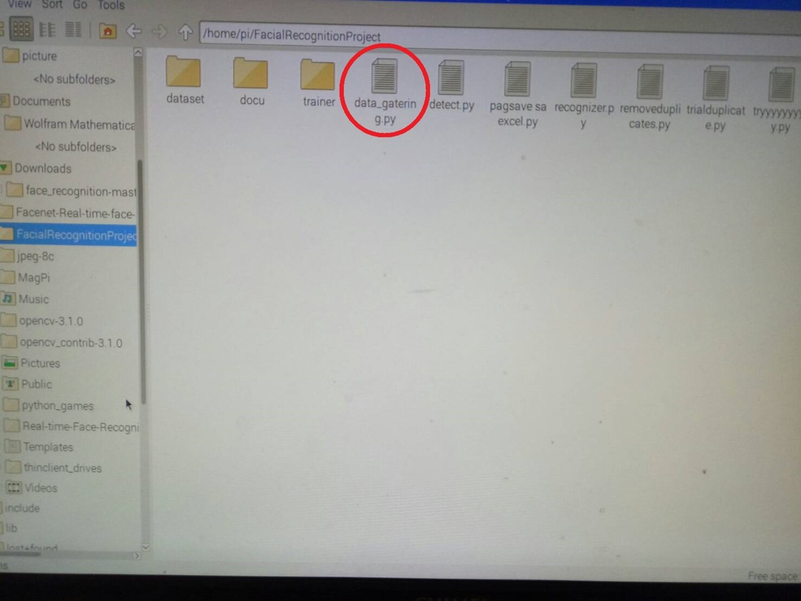
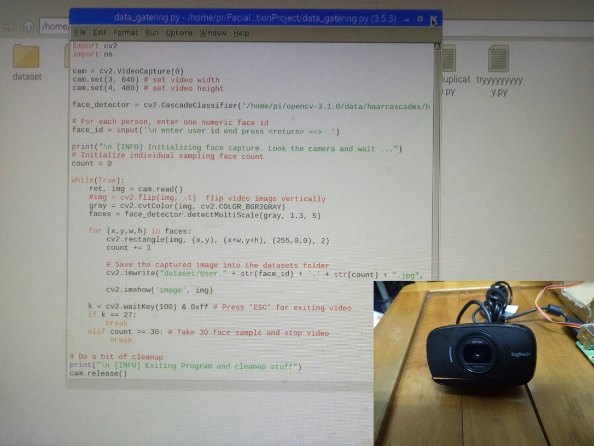
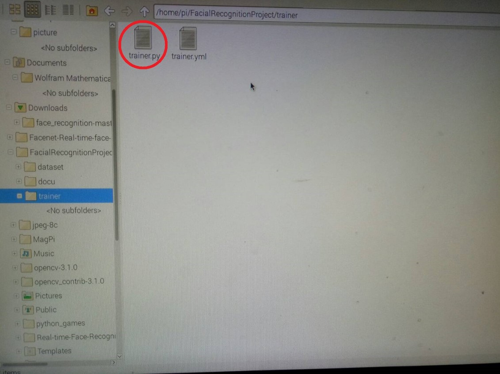
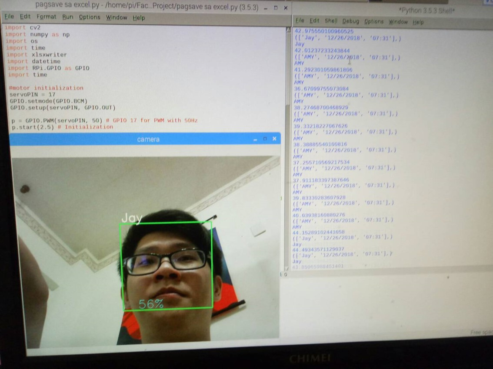

步驟一：首先打開FacialRecognitionProject的資料夾會進入文件首頁

步驟二：點開pagsave saexcel.py的文字檔

步驟三：進入以下畫面後，將紅色框框裡修改成自己的英文名字，並記住自己輸入格子上方的代號

步驟四：接著回到首頁，點開data_gatering.py的文字檔

步驟五：進入以下畫面後，按F5執行，輸入剛剛的代號，此時鏡頭會啟動
接著距離鏡頭30公分將自己的臉對準，約30秒左右

步驟六：臉部資料收集完成後點開trainer資料夾，打開trainer.py文字檔後按F5執行訓練

步驟七：訓練完成後回到首頁，再次點開pagsave saexcel.py後按下F5執行
步驟八：出現以下畫面時，將你的臉對準鏡頭，閘門有所反應就代表你操作成功了
